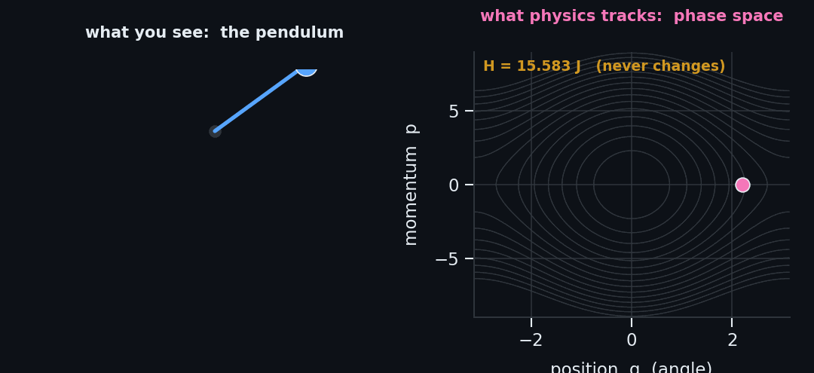
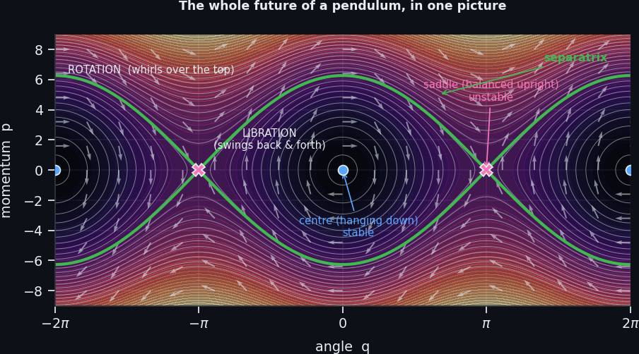
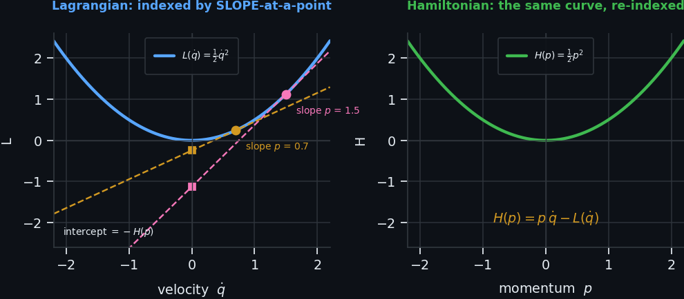
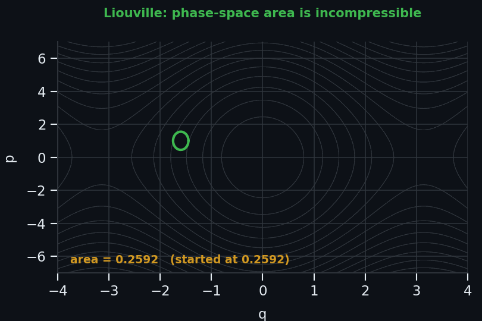
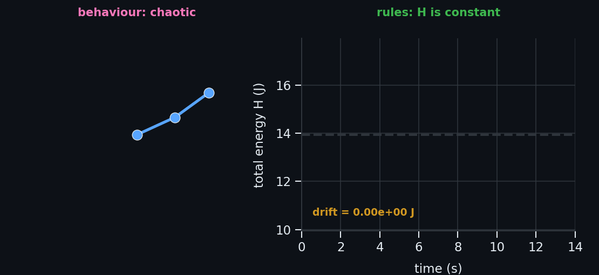
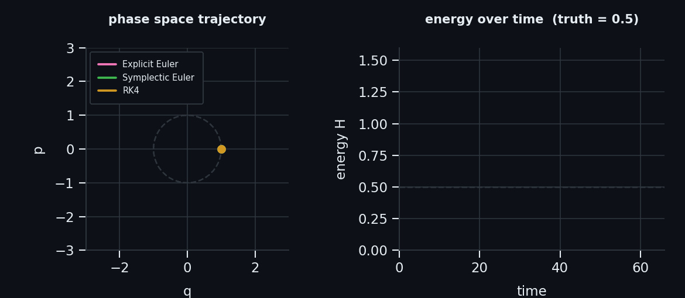
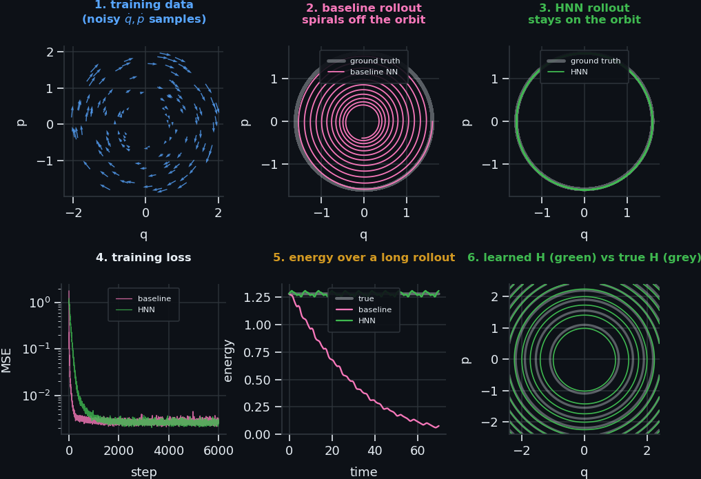

The Hamiltonian
One function that contains a system's entire future — explained from scratch, then taken all the way to modern machine learning.
The 30-second version
Newton tells you how to compute forces, one at a time, and then chase the consequences. Hamilton says: don't bother. Write down a single scalar function \(H\) — usually the total energy — expressed in terms of where things are and how much momentum they carry. Once you have that one function, the entire motion of the system follows mechanically, forever, from two symmetric equations. You never write down a force again.
This document is layered. Level 1 assumes only that you know what energy and speed are. Level 5 assumes you train neural networks. You can stop at any level and still have something true and useful — each one is a complete picture, just at a different resolution.
Level 1 — Beginner no maths required
Terms used throughout this level — read this first
These words appear constantly and are often left undefined elsewhere. Here is what each one actually means:
| Term | Meaning |
|---|---|
| \(q\) — position | A number (or set of numbers) that completely pins down the configuration of the system — where everything is. For a pendulum, \(q\) is the angle the rod makes with the vertical. For a car on a road, \(q\) is its distance from some reference point. Physicists call it a generalised coordinate because it doesn't have to be a simple length — it can be an angle, a distance, or any combination that uniquely identifies the arrangement of the system. |
| \(p\) — momentum | Momentum is mass times velocity: \(p = m v\). A 2 kg ball moving at 3 m/s carries momentum \(p = 6\) kg·m/s. It measures how much motion an object carries — or, equivalently, how hard it is to stop. A fast, heavy lorry is hard to stop; it has a lot of momentum. A slow, light tennis ball is easy to stop; it has little. Momentum is not the same as speed or energy — it is a separate bookkeeping quantity, and it is the natural partner of position in the Hamiltonian framework. |
| Inertia | The tendency of an object to resist changes in its motion. A heavy object has high inertia: it takes a large force to get it moving, and an equally large force to bring it back to rest. A light object has low inertia and responds quickly to small forces. In equations, inertia appears as mass \(m\): the bigger \(m\), the more resistant the object. Newton's first law is just a statement about inertia — objects keep doing what they are already doing unless something pushes them. |
| \(T\) — kinetic energy | The energy an object has because it is moving. For a single mass, \(T = \tfrac{1}{2}mv^2 = \tfrac{p^2}{2m}\). A fast-moving object has high kinetic energy; a stationary object has none. The kinetic energy depends only on how fast the object is going, not on where it is. |
| \(V\) — potential energy | Stored energy that depends on position, not on motion. A ball held above the ground has gravitational potential energy \(V = mgh\) — the higher it is, the more energy is stored. A compressed spring has elastic potential energy. If you release the ball or the spring, potential energy converts into kinetic energy. Crucially, \(V\) depends only on where the object is (\(q\)), not on how fast it is moving. |
| \(\dot q,\, \dot p\) — rates of change | A dot over a quantity means "how fast it is changing per second". So \(\dot q\) is the rate at which position changes — which is simply velocity. And \(\dot p\) is the rate at which momentum changes — which is force (Newton's second law: force = rate of change of momentum). |
Three roads to the same destination
There are three major formulations of classical mechanics. They are all equivalent — they predict identical motion — but each one illuminates a different aspect of the physics. We will build each one step by step using the simple pendulum as our running example, because it is the simplest non-trivial system and every idea carries over to much more complex problems.
The running example: simple pendulum
A mass \(m\) (the bob) hangs from a lightweight rod of length \(\ell\), attached to a pivot at the top. The bob is constrained to move in a circle. We describe its position by the angle \(\theta\) that the rod makes with the downward vertical.
- \(\theta = 0\): hanging straight down (equilibrium).
- \(\theta = \pi\): balanced perfectly upright (unstable).
- Any value of \(\theta\) plus any angular speed \(\dot\theta\) completely describes the state of the pendulum.
Road 1: Newtonian mechanics — \(F = ma\)
The strategy: identify every force on the object, resolve it into components along the direction of motion, and set the total force equal to mass times acceleration.
Step 1 — Set up coordinates
We could use the arc-length \(s\) (the distance the bob travels along its circular path) or the angle \(\theta\). They are equivalent because \(s = \ell\theta\) (arc = radius × angle). Using \(\theta\) is more natural here, so we let \(q = \theta\).
Step 2 — Identify the forces
Two forces act on the bob:
- Gravity: magnitude \(mg\), pointing straight down.
- Tension in the rod: magnitude \(T\), pointing directly toward the pivot (i.e. radially inward).
The bob can only move along the circular arc (the rod prevents it from flying outward). So only the tangential component of force — the part pointing along the arc — changes the speed of the bob. The tension is directed radially (perpendicular to the arc) so it does nothing to the bob's speed. We can ignore it entirely for the equation of motion.
Step 3 — Resolve gravity along the arc
With a small triangle of geometry: the component of gravity tangent to the arc is \(-mg\sin\theta\). The minus sign is because gravity pulls the bob back toward vertical (toward smaller \(\theta\)).
Step 4 — Write \(F = ma\) along the arc
Newton's second law along the tangential direction:
$$m\ell\ddot\theta \;=\; -mg\sin\theta$$Dividing both sides by \(m\ell\):
$$\boxed{\ddot\theta \;=\; -\frac{g}{\ell}\sin\theta}$$This is the equation of motion for the pendulum — a second-order differential equation (it contains \(\ddot\theta\), the second derivative). The dot-notation means: \(\dot\theta = d\theta/dt\) is angular velocity (how fast the angle is changing), and \(\ddot\theta = d^2\theta/dt^2\) is angular acceleration (how fast the angular velocity is changing).
What does "equation of motion" mean?
An equation of motion is a differential equation whose solution is \(\theta(t)\) — the angle as a function of time. If you give it an initial angle \(\theta(0)\) and an initial angular velocity \(\dot\theta(0)\), the equation tells you where the bob will be at every future moment. For small angles (\(\sin\theta \approx \theta\)) the solution is a clean sinusoid. For large angles, the \(\sin\theta\) term makes it much harder to solve analytically, and we turn to numerical methods or the Lagrangian/Hamiltonian approaches.
Road 2: Lagrangian mechanics — work with energies, not forces
The strategy: instead of cataloguing every force (vectors, components, diagrams), write down just two scalar numbers — kinetic energy and potential energy — and take their difference. That difference is called the Lagrangian.
The Lagrangian defined
$$L(q, \dot q) \;=\; \underbrace{T(\dot q)}_{\text{kinetic energy}} \;-\; \underbrace{V(q)}_{\text{potential energy}}$$It is a function of position \(q\) and velocity \(\dot q\). Notice the minus sign — kinetic minus potential, not plus. (The Hamiltonian will be kinetic plus potential.) The Lagrangian is not itself the energy; it is a bookkeeping object from which the equations of motion flow automatically.
Step 1 — Write the kinetic energy \(T\)
Kinetic energy is \(\tfrac{1}{2}mv^2\). The bob moves along a circle, so its speed is \(v = \ell\dot\theta\) (arc-rate = radius × angular rate). Therefore:
$$T = \tfrac{1}{2}m(\ell\dot\theta)^2 = \tfrac{1}{2}m\ell^2\dot\theta^2$$Step 2 — Write the potential energy \(V\)
We take the height of the pivot as the reference level (zero potential). The bob sits at height \(-\ell\cos\theta\) below the pivot, so:
$$V = mg(-\ell\cos\theta) = -mg\ell\cos\theta$$(When \(\theta = 0\) the bob is at its lowest point, \(V\) is at its minimum; when \(\theta = \pi\) it is at the top, \(V\) is at its maximum.)
Step 3 — Write the Lagrangian \(L = T - V\)
$$L = \tfrac{1}{2}m\ell^2\dot\theta^2 - (-mg\ell\cos\theta) = \tfrac{1}{2}m\ell^2\dot\theta^2 + mg\ell\cos\theta$$Step 4 — Define the generalised momentum
Lagrangian mechanics introduces the generalised momentum \(p\) corresponding to the coordinate \(\theta\), defined as the derivative of \(L\) with respect to the velocity \(\dot\theta\):
$$p_\theta \;=\; \frac{\partial L}{\partial \dot\theta} \;=\; m\ell^2\dot\theta$$This is the angular momentum of the bob: mass × (distance from pivot)\(^2\) × angular velocity. For a simple mass on a spring, the same formula gives the ordinary linear momentum \(p = mv\). The Lagrangian framework unifies these.
Why "generalised" momentum?
When the coordinate \(q\) is a plain Cartesian position, \(p = \partial L/\partial\dot q\) gives the familiar linear momentum \(mv\). When \(q\) is an angle, it gives angular momentum. When \(q\) is something stranger (a normal mode amplitude, a field value), the formula still works — it just returns a correspondingly exotic quantity. The word "generalised" means the formula works for any coordinate, not just positions measured in metres.
Step 5 — Apply the Euler–Lagrange equation
This is the Lagrangian equivalent of \(F = ma\). For each coordinate \(q\):
$$\frac{d}{dt}\!\left(\frac{\partial L}{\partial \dot q}\right) = \frac{\partial L}{\partial q}$$In words: the rate of change of the generalised momentum equals the generalised force (the sensitivity of \(L\) to position). This structure is exactly Newton's law, but written entirely in terms of the energy function.
For our pendulum:
- Left side: \(\displaystyle\frac{d}{dt}(m\ell^2\dot\theta) = m\ell^2\ddot\theta\)
- Right side: \(\displaystyle\frac{\partial L}{\partial\theta} = -mg\ell\sin\theta\)
Setting them equal and dividing by \(m\ell^2\):
$$\ddot\theta = -\frac{g}{\ell}\sin\theta$$The same equation of motion as before — arrived at without drawing a single force diagram, using only energies.
Why Lagrangian beats Newtonian in complex systems
For the pendulum, both approaches give the same equation with similar effort. But imagine a double pendulum, a robot arm with multiple joints, or a molecule with dozens of atoms. With Newton you must resolve every force into components and carefully account for internal constraint forces. With Lagrange you write down \(T\) and \(V\) — two scalars — and crank the formula. Constraint forces disappear automatically (they do no work). This is the practical reason physicists switched to Lagrangians.
Road 3: Hamiltonian mechanics — the energy function as the engine
The strategy: take the total energy (kinetic + potential), write it in terms of position \(q\) and momentum \(p\) (not velocity \(\dot q\)), and call it the Hamiltonian \(H\). Then two simple derivative rules give all the equations of motion.
The Hamiltonian defined
$$H(q,p) \;=\; \underbrace{T(p)}_{\text{kinetic energy}} \;+\; \underbrace{V(q)}_{\text{potential energy}}$$Notice the plus sign — this is total energy, unlike the Lagrangian (which had a minus). The crucial difference from the Lagrangian: \(H\) is written in terms of momentum \(p\), not velocity \(\dot q\). We swap from \(\dot q\) to \(p\) using the momentum definition \(p = \partial L/\partial\dot q\), which gives \(\dot q = p/(m)\) for a simple mass.
Step 1 — Start from the Lagrangian result
We already found: \(p_\theta = m\ell^2\dot\theta\). Solve for \(\dot\theta\):
$$\dot\theta = \frac{p_\theta}{m\ell^2}$$Step 2 — Write total energy, replace \(\dot\theta\) with \(p_\theta\)
Total energy = kinetic + potential. Substitute \(\dot\theta = p_\theta/(m\ell^2)\) into the kinetic term:
$$H = \frac{1}{2}m\ell^2\dot\theta^2 + (-mg\ell\cos\theta) = \frac{p_\theta^2}{2m\ell^2} - mg\ell\cos\theta$$This is the Hamiltonian. It contains no velocities — only position \(\theta\) and momentum \(p_\theta\).
Step 3 — Apply Hamilton's equations
Two first-order equations replace the single second-order equation of motion:
$$\dot\theta = \frac{\partial H}{\partial p_\theta} = \frac{p_\theta}{m\ell^2} \qquad\quad \dot p_\theta = -\frac{\partial H}{\partial\theta} = -mg\ell\sin\theta$$Read these in plain English:
- First: the angular velocity equals momentum divided by \(m\ell^2\). This is just the definition of angular momentum rearranged. It says how fast the angle changes given the current momentum.
- Second: the momentum changes at a rate \(-mg\ell\sin\theta\). This is the restoring torque of gravity — it pushes the bob back toward \(\theta = 0\). It says how fast the momentum changes given the current angle.
Combine them: differentiate the first with respect to time, substitute the second, and you recover \(\ddot\theta = -(g/\ell)\sin\theta\). All three roads lead to the same place.
Why split into two first-order equations?
The Newtonian and Lagrangian approaches give one second-order equation (\(\ddot\theta = \ldots\)) — you need two initial conditions (\(\theta_0\) and \(\dot\theta_0\)) and you integrate twice. Hamilton's pair of first-order equations have the same information but in a form that is geometrically richer: you can visualise the entire state as a single point \((\theta, p_\theta)\) moving through a plane, and study the global structure of all possible motions at once. That plane is phase space.
The three formulations side by side
| Newtonian | Lagrangian | Hamiltonian | |
|---|---|---|---|
| Start with | Forces (vectors) | \(L = T - V\) (scalar) | \(H = T + V\) (scalar) |
| Variables | position, acceleration | \(q\), velocity \(\dot q\) | \(q\), momentum \(p\) |
| Master equation | \(F = ma\) — one 2nd-order ODE | Euler–Lagrange — one 2nd-order ODE | Hamilton's eqns — two 1st-order ODEs |
| Pendulum result | \(\ddot\theta = -(g/\ell)\sin\theta\) | \(\ddot\theta = -(g/\ell)\sin\theta\) | \(\dot\theta = p/m\ell^2\), \(\dot p = -mg\ell\sin\theta\) |
| Handles constraints? | Must add extra forces | Automatic (they drop out) | Automatic |
| Geometric insight? | Limited | Action principle | Phase space, conservation laws |
| Essential for QM? | No | Path integrals | Schrödinger equation |
Phase space: seeing all possible futures at once
Hamilton's equations describe the evolution of a state \((\theta, p_\theta)\). That state is a single point in a two-dimensional plane — the phase space of the pendulum. As time passes, that point moves, tracing a curve called a flow.
Why does this buy us anything? Because the energy \(H(\theta, p_\theta)\) is conserved. The state must always stay on the curve where \(H\) has the same value it started with. These curves of constant \(H\) are the possible trajectories — and you can draw all of them at once, giving a complete picture of every possible motion, without solving a single equation.
The mountain-range analogy
Think of the \(H\) surface as a fixed mountain range. A state (the "marble") is constrained to constant altitude — it can never roll downhill. So it runs along contour lines forever. The mountain's shape encodes the physics; the marble's starting contour encodes the initial energy.

Hamilton's equations — the precise statement
$$\dot q \;=\; \frac{\partial H}{\partial p}, \qquad\qquad \dot p \;=\; -\,\frac{\partial H}{\partial q}$$The symbol \(\partial H/\partial p\) is a partial derivative: "how steeply does \(H\) change if I increase \(p\) by a tiny amount while holding \(q\) fixed?" You treat the other variable as a constant while differentiating. Read the equations:
- \(\dot q = \partial H/\partial p\): how fast the position changes equals the sensitivity of energy to momentum. For a mass on a spring, \(H = p^2/2m + kq^2/2\), so \(\partial H/\partial p = p/m\) — velocity equals momentum divided by mass. The denominator \(m\) is inertia: heavier means the same momentum produces less velocity.
- \(\dot p = -\partial H/\partial q\): how fast the momentum changes equals minus the sensitivity of energy to position — i.e., the force. If potential energy rises steeply with position (steep hill), momentum decreases fast (the object decelerates). The minus sign means objects accelerate downhill, away from high potential energy.
Concrete check: mass on a spring
\(H = \dfrac{p^2}{2m} + \dfrac{1}{2}kq^2\). Applying the equations:
$$\dot q = \frac{p}{m} \;\Rightarrow\; \text{velocity = momentum/mass} \qquad \dot p = -kq \;\Rightarrow\; \text{force = }F = -kq \text{ (Hooke's law)}$$Newton's laws drop out of a single energy function — no force diagram required.
Reading a phase portrait
Drawing all contour lines of \(H\) on the phase plane gives a phase portrait — a map of every possible motion at once.

Blue dots at \((\theta,p) = (0,0)\): the pendulum hanging straight down — a stable equilibrium. A small push returns it; nearby trajectories are closed loops (back-and-forth oscillation, called libration).
Pink crosses at \((\theta,p) = (\pm\pi, 0)\): the pendulum balanced upright — an unstable equilibrium. Any tiny nudge sends it falling away.
Green curve — the separatrix (Latin: "the separator"). This is the energy contour through the unstable equilibrium. Inside it: the pendulum oscillates (not enough energy to go over the top). Outside it: the pendulum has enough energy to whirl continuously over the top in full rotations. A pendulum sitting exactly on the separatrix would take infinite time to reach the top and never quite arrive.
Without solving any equation, the portrait reveals: how many equilibria there are, which are stable, what separates swinging from spinning, and what happens at every possible starting condition.
Interactive step-by-step guide: derive it yourself
Work through the pendulum derivation step by step. At each stage, write Python code that matches the equation shown, run it, and the checker tells you if it is correct. Use the system parameters m = 1.0 (mass, kg), l = 1.0 (rod length, m), g = 9.81 (gravity, m/s²).
1Kinetic energy \(T\)
The bob moves on a circle of radius \(\ell\). Its speed is \(v = \ell\dot\theta\). Write a Python function kinetic_energy(m, l, theta_dot) that returns \(T = \tfrac{1}{2}m\ell^2\dot\theta^2\).
2Potential energy \(V\)
The pivot is the reference height. The bob hangs at height \(-\ell\cos\theta\) below it, so \(V = -mg\ell\cos\theta\). Write potential_energy(m, l, g, theta).
3The Lagrangian \(L = T - V\)
Combine the previous two. Write lagrangian(m, l, g, theta, theta_dot) that returns \(L = T - V\).
4Generalised momentum \(p_\theta = \partial L/\partial\dot\theta\)
The generalised momentum is the derivative of \(L\) with respect to \(\dot\theta\). For our pendulum \(L = \tfrac{1}{2}m\ell^2\dot\theta^2 + mg\ell\cos\theta\), so \(p_\theta = m\ell^2\dot\theta\). Write momentum(m, l, theta_dot).
5The Hamiltonian \(H = T(p) + V(\theta)\)
Re-express kinetic energy in terms of \(p_\theta\): since \(p_\theta = m\ell^2\dot\theta\), we have \(\dot\theta = p_\theta/(m\ell^2)\), so \(T = p_\theta^2/(2m\ell^2)\). Write hamiltonian(m, l, g, theta, p) that returns \(H = \dfrac{p^2}{2m\ell^2} - mg\ell\cos\theta\).
6Hamilton's equations: \(\dot\theta\) and \(\dot p_\theta\)
The equations of motion come from differentiating \(H\). Write hamiltons_equations(m, l, g, theta, p) that returns a tuple (theta_dot, p_dot) where:
\(\dot\theta = \partial H/\partial p = p/(m\ell^2)\) and \(\dot p = -\partial H/\partial\theta = -mg\ell\sin\theta\).
7Verify energy conservation
A key test: under Hamilton's equations, \(H\) should be constant over time. Simulate 1000 steps with step-size \(h = 0.01\) s using the symplectic Euler method (p_new = p + h * p_dot, then theta_new = theta + h * theta_dot_new). Start at \(\theta_0 = 1.0\) rad, \(p_0 = 0\). Print the maximum fractional energy change over the run.
Level 2 — Working knowledge some calculus
Building \(H\) yourself: the four-step recipe
For any standard mechanical system:
- Choose coordinates \(q\). Anything that pins down the configuration: an angle, a length, a set of \(xyz\) triples. These are "generalised" coordinates — you are free to pick whatever is convenient, and this freedom is a large part of the method's power.
- Write the Lagrangian \(L = T - V\), kinetic minus potential, in terms of \(q\) and velocity \(\dot q\).
- Define the conjugate momentum \(\displaystyle p=\frac{\partial L}{\partial \dot q}\). For simple cases this returns the familiar \(mv\); for rotation it returns angular momentum; in a magnetic field it returns something with an extra term that is genuinely not \(mv\).
- Legendre transform: \(H = p\dot q - L\), then eliminate \(\dot q\) everywhere in favour of \(p\). This last step is mandatory and is where people slip.
What the Legendre transform actually does
The name is intimidating; the operation is not. The Legendre transform is a change of address system, not a change of content.
A convex curve can be described two ways. The obvious way: list every point \((x, f(x))\). The other way: for every possible slope, record the tangent line with that slope. Both descriptions carry identical information — you can rebuild the curve from its family of tangent lines. The transform swaps you from "indexed by position" to "indexed by slope".

Why bother swapping variables at all?
Because it converts one second-order equation into two first-order ones. Lagrangian mechanics gives you \(\ddot q = \ldots\) — an accelerating second-order beast. Hamilton gives \(\dot q = \ldots,\ \dot p = \ldots\): a plain first-order flow on phase space. First-order flows are the natural language of geometry, of numerical integration, and of every ODE solver and neural-ODE library ever written. The swap is what makes everything downstream tractable.
Worked example, end to end: the simple pendulum
Mass \(m\), rod length \(\ell\), angle \(\theta\) from the downward vertical.
Step 1 — coordinate. \(q=\theta\). One number fixes the configuration, so one degree of freedom.
Step 2 — Lagrangian. The bob's speed is \(\ell\dot\theta\), and its height above the lowest point is \(\ell(1-\cos\theta)\):
$$L = \tfrac{1}{2}m\ell^2\dot\theta^2 - mg\ell(1-\cos\theta)$$Step 3 — conjugate momentum.
$$p_\theta=\frac{\partial L}{\partial\dot\theta}=m\ell^2\dot\theta \quad\Longrightarrow\quad \dot\theta=\frac{p_\theta}{m\ell^2}$$Note this is angular momentum, not linear momentum — the coordinate you chose dictates what "momentum" means.
Step 4 — transform.
$$H = p_\theta\dot\theta - L = \frac{p_\theta^2}{2m\ell^2} + mg\ell(1-\cos\theta)$$Kinetic plus potential, as promised, and critically with no \(\dot\theta\) left anywhere. Now apply the two equations:
$$\dot\theta = \frac{\partial H}{\partial p_\theta} = \frac{p_\theta}{m\ell^2}, \qquad \dot p_\theta = -\frac{\partial H}{\partial \theta} = -mg\ell\sin\theta$$Combining them recovers the textbook \(\ddot\theta = -(g/\ell)\sin\theta\). Same physics, arrived at without ever resolving a force into components — which is exactly why this scales to systems where drawing force diagrams would be hopeless.
When \(H = T + V\) is wrong
Most courses quietly imply \(H\) is always the energy. It isn't, and knowing the exceptions separates people who can use this from people who can only recite it.
| Condition | Consequence |
|---|---|
| \(L\) has no explicit \(t\) | \(H\) is conserved along trajectories. |
| Constraints are time-independent and \(T\) is quadratic in \(\dot q\) | \(H\) equals the total energy. |
| Rotating frame, moving constraint, time-varying field | \(H\) may be conserved but is not the energy (e.g. the Jacobi integral in orbital mechanics). |
| Explicit time dependence, \(\partial H/\partial t\neq0\) | \(H\) is not conserved: \(dH/dt=\partial H/\partial t\). |
| Friction, drag, any dissipation | Not Hamiltonian at all without extending the framework (see port-Hamiltonian). |
The failure mode that matters most for machine learning: step 3 must be invertible. You need to solve \(p=\partial L/\partial\dot q\) for \(\dot q\). This works when the mass matrix \(\partial^2L/\partial\dot q^2\) is non-singular. When it is singular — as in genuinely relativistic systems, gauge theories, or systems with hidden constraints — the transform is undefined, and you need the machinery of constrained (Dirac) Hamiltonian systems. This is precisely the "sometimes there simply is no usable version" problem, and it is the single strongest technical argument for Lagrangian neural networks over Hamiltonian ones. We return to it in Level 5.
Level 3 — The real structure the beautiful part
It's a rotation, not a gradient
Stack position and momentum into one state vector \(x=(q,p)\). Hamilton's two equations collapse into one:
$$\dot x = J\,\nabla H, \qquad J=\begin{pmatrix}0&1\\-1&0\end{pmatrix}$$Stare at \(J\). In two dimensions, that matrix rotates a vector by 90°. So the equation reads:
The system always moves at right angles to the steepest-ascent direction of \(H\).
This one line explains everything from Level 1. Gradient descent — what almost every ML optimiser does — moves along \(-\nabla H\), straight downhill, and the objective decreases. Hamiltonian flow moves perpendicular to \(\nabla H\), so the objective never changes at all. Physics is not optimising energy. It is circulating around it.
The proof of energy conservation is now two lines, and worth doing yourself:
$$\frac{dH}{dt}=\nabla H\cdot\dot x=\nabla H\cdot J\nabla H=0$$The final step holds because \(J\) is antisymmetric (\(J^\top=-J\)), and \(v\cdot Jv=0\) for any antisymmetric \(J\) and any \(v\) whatsoever. Notice what this argument did not use: nothing about pendulums, nothing about what \(H\) is, no special case. Energy conservation is a structural consequence of the antisymmetry of \(J\), nothing more.
Why this is the key insight for machine learning
If you build a model whose output is \(J\nabla H_\vartheta\) for a learned scalar \(H_\vartheta\), then whatever the network learns — however badly trained, however wrong — the resulting dynamics conserve \(H_\vartheta\) exactly. Not approximately. Not with a penalty term. It's a theorem about the architecture, not a property of the fit. That is what "inductive bias" means at its most powerful: making an entire class of errors unrepresentable.
Poisson brackets: the algebra of change
For any quantity \(f(q,p)\) — energy, angular momentum, anything at all — its rate of change along the flow is
$$\frac{df}{dt}=\{f,H\}, \qquad \{f,g\}\equiv\frac{\partial f}{\partial q}\frac{\partial g}{\partial p}-\frac{\partial f}{\partial p}\frac{\partial g}{\partial q}$$The Poisson bracket \(\{\cdot,\cdot\}\) turns dynamics into algebra. Consequences worth internalising:
- \(\{H,H\}=0\) automatically, so energy is conserved — same theorem, new clothes.
- Any \(f\) with \(\{f,H\}=0\) is a conserved quantity. Finding conservation laws becomes: find things that commute with \(H\).
- \(H\) is not merely a number — it is the generator of time translation. Momentum generates spatial translation, angular momentum generates rotation. Each conserved quantity is the symmetry it protects.
- Replace \(\{f,g\}\) with \(\frac{1}{i\hbar}[\hat f,\hat g]\) and classical mechanics becomes quantum mechanics. The Schrödinger equation \(i\hbar\,\partial_t\psi=\hat H\psi\) is this same statement, with \(\hat H\) the Hamiltonian operator. This is not an analogy — it is the historical and structural bridge, and it is why "Hamiltonian" is the central object in quantum theory too.
Liouville's theorem: phase space is incompressible
Take a whole cloud of starting states — a blob of uncertainty about where your system actually is. Let every point flow. The blob stretches, shears, and eventually gets whipped into a filamentary mess. But its area is exactly constant, forever.

The consequences are large and reach well outside physics:
- No attractors are possible. A Hamiltonian system can never settle into a fixed point or limit cycle, because that would require a volume of states to shrink to zero. Damped systems have attractors precisely because they are not Hamiltonian.
- Information is never destroyed. Uncertainty is conserved, not reduced. It gets stirred into unrecognisable shapes — which is what makes chaos look like information loss without it actually being so.
- Statistical mechanics needs this to define equilibrium ensembles at all.
- Normalising flows and Hamiltonian Monte Carlo need it, because a volume-preserving map has unit Jacobian determinant — so the change-of-variables correction is exactly 1 and you get it for free.
Noether: symmetry ⇒ conservation
Perhaps the deepest statement in classical physics, and in this language it is almost a triviality:
| If \(H\) doesn't change when you… | …then this is conserved |
|---|---|
| shift the system in space | linear momentum |
| rotate the system | angular momentum |
| shift the clock | energy |
| change the quantum phase | electric charge |
Conservation laws are not separate empirical facts to be discovered one by one. They are shadows of symmetries of \(H\). This is why building symmetry into a model architecture is so effective: you are not adding a hint, you are installing a conservation law.
Integrability, chaos, and why constrained ≠ predictable
A system with \(n\) degrees of freedom and \(n\) independent conserved quantities in involution is integrable — solvable in closed form, with motion confined to a torus in phase space. The single pendulum is integrable. The overwhelming majority of systems are not.

The distinction worth taking away
Complicated behaviour is not the same as absent rules. The double pendulum is unpredictable and perfectly lawful at the same time. Chaos limits how far ahead you can forecast a specific trajectory; it places no limit whatsoever on the constraints. A model that learns constraints therefore stays meaningful long after a model that learned trajectories has become noise — which is the entire argument for physics-structured ML.
Between integrable and fully chaotic sits the KAM theorem: perturb an integrable system slightly and most invariant tori survive, deformed. This is why the solar system is stable enough to have planets, and it is one of the great results of 20th-century mathematics.
Level 4 — Computation practical
Symplectic integrators: why your ODE solver is lying
Simulate a frictionless oscillator with a standard solver and the energy drifts. The pendulum slowly dies, or slowly winds up. Nothing in the physics does that — the integrator injected or drained energy. This is exactly the failure mode people describe in neural rollouts, and it is instructive that a plain numerical method suffers it too.

The fix is a one-character change to Euler's method:
# Explicit Euler — NOT symplectic, energy blows up
q_new = q + h * p
p_new = p - h * q # both updates use OLD values
# Symplectic Euler — energy stays bounded forever
p_new = p - h * q
q_new = q + h * p_new # <-- uses the NEW momentum
That is the whole difference. Feeding the freshly-updated momentum into the position update makes the map area-preserving in phase space, which is the discrete echo of Liouville's theorem.
The workhorse in practice is leapfrog / velocity Verlet, second-order and time-reversible:
p_half = p - (h/2) * dV_dq(q) # half kick
q_new = q + h * p_half / m # full drift
p_new = p_half - (h/2) * dV_dq(q_new) # half kick
It is the reason molecular-dynamics simulations can run for billions of steps and planetary integrations can run for billions of years without dissolving.
Why it works: the shadow Hamiltonian
Here is the beautiful explanation. A symplectic integrator does not conserve your \(H\) exactly. What it does is exactly solve a slightly different problem: there exists a nearby "shadow" Hamiltonian
$$\tilde H = H + h^2 H_2 + h^4 H_4 + \cdots$$which the discrete map conserves to exponentially small error. Your simulation is the perfect trajectory of a system that is a tiny perturbation of the one you asked for. Since \(\tilde H\) stays within \(O(h^2)\) of \(H\) forever, the energy error oscillates within a bounded band instead of accumulating.
Non-symplectic methods have no such shadow. Their errors have no conserved quantity to hold them in place, so they perform a random walk that grows without limit. This is the sharpest available statement of "structure beats accuracy on long horizons" — and it transfers directly to learned models.
Interactive lab
Run it yourself. Increase the step size until Euler detonates, and watch how the symplectic method degrades gracefully instead of catastrophically.
Level 5 — Machine learning research level
Hamiltonian Neural Networks
The idea, from Greydanus, Dzamba & Yosinski (NeurIPS 2019), is almost aggressively simple.
The baseline approach: a network maps state to its time derivative, \((q,p)\mapsto(\dot q,\dot p)\). Nothing prevents the learned vector field from having sources, sinks, or spirals. Energy conservation is not even expressible as a constraint — so it is violated, and the violations compound over a rollout.
The HNN approach: the network outputs a single scalar \(H_\vartheta(q,p)\). The dynamics are then obtained by differentiating it:
$$\hat{\dot q}=\frac{\partial H_\vartheta}{\partial p},\qquad \hat{\dot p}=-\frac{\partial H_\vartheta}{\partial q}$$and the loss compares those to the observed derivatives:
$$\mathcal{L}=\left\|\frac{\partial H_\vartheta}{\partial p}-\dot q\right\|^2+\left\|\frac{\partial H_\vartheta}{\partial q}+\dot p\right\|^2$$Training now requires differentiating through a gradient, so you need second derivatives. And the payoff is that conservation is structural: the model cannot represent a non-conservative field even if it wanted to.
I trained both models from scratch in pure NumPy — no autodiff library, second derivatives worked out by hand — on noisy observations of a mass-spring system:

The lesson hiding in panel 4
Equal training loss, radically different physics. No amount of monitoring the loss curve would have told you the baseline was broken. The failure is invisible in-distribution and only surfaces on long horizons — which is exactly why "just scale it up" doesn't fix it. More data teaches the model the same shortcut more confidently.
The code, explained
The one genuinely subtle part is the backward pass. With \(z=W_1x+b_1\), \(h=\tanh z\), \(H=w_2^\top h\), the state-gradient is \(\nabla_x H = W_1^\top s\) where \(s_k=w_{2k}(1-h_k^2)\). Because the output already contains a derivative, the gradient w.r.t. the weights picks up a second-derivative term:
def hnn_forward(P, X):
Z = X @ P["W1"].T + P["b1"]
Hh = np.tanh(Z); Hp = 1 - Hh**2
S = Hp * P["W2"][0] # s_k = w2_k * tanh'(z_k)
G = S @ P["W1"] # grad_x H
return G @ J.T, ... # symplectic 90-degree turn
def hnn_grads(P, X, Y):
F, c = hnn_forward(P, X)
dF = 2*(F - Y) / (len(X)*2)
U = dF @ J # dL/d(grad H)
C = U @ P["W1"].T # dL/dS
Dz = C * c["w2"] * (-2*c["Hh"]*c["Hp"]) # <-- the second-derivative term
return dict(W1 = c["S"].T @ U + Dz.T @ X, # two paths into W1
b1 = Dz.sum(0),
W2 = (C * c["Hp"]).sum(0)[None,:],
b2 = np.zeros(1)) # note: b2 gets no gradient
Three things that trip people up
- \(W_1\) receives gradient along two paths — once because it appears explicitly in \(\nabla_x H=W_1^\top s\), and once through \(z\). Miss either and training silently underperforms.
- The output bias \(b_2\) has exactly zero gradient. Only derivatives of \(H\) are observable, so the absolute energy offset is fundamentally unidentifiable. Your learned \(H\) is correct up to an additive constant — which is why panel 6 above compares contour shapes, not values.
- Use a smooth activation. ReLU has zero second derivative almost everywhere, which destroys the gradients above.
tanh,softplus, orsinare the standard choices.
HNN vs LNN: the coordinate problem, precisely stated
Hamiltonian methods want canonical coordinates \((q,p)\) with \(p=\partial L/\partial\dot q\). Lagrangian Neural Networks want \((q,\dot q)\) — positions and velocities. That distinction sounds pedantic and is in fact decisive:
| HNN | LNN | |
|---|---|---|
| Learns | \(H(q,p)\) | \(L(q,\dot q)\) |
| Needs | canonical momenta | velocities — what sensors actually give you |
| Machinery | \(\dot x=J\nabla H\), cheap | Euler–Lagrange, needs \((\partial^2L/\partial\dot q^2)^{-1}\) — a Hessian inverse per step |
| Conservation | exact by construction | emerges via the learned \(L\) |
| Fails when | the Legendre transform is singular or unknown | the learned Hessian is ill-conditioned |
The honest summary: HNNs have the cleaner guarantee, LNNs have the friendlier inputs. If you genuinely have canonical coordinates, the HNN is simpler, cheaper, and its conservation is airtight. If your data arrives as camera angles, joint encoders, or raw sensor readings — and it usually does — recovering \(p\) may be messy, unknown, or (for singular Lagrangians) nonexistent, and the LNN sidesteps the problem entirely. The cost is a Hessian inverse inside every forward pass, which is both slow and numerically delicate.
A third option now dominates practice: learn the coordinate transformation too. Hamiltonian Generative Networks and related work put an encoder in front, mapping pixels or sensors into a latent space, and impose Hamiltonian structure there. You get the guarantee without needing to know the canonical coordinates in advance.
The same idea outside physics
Hamiltonian Monte Carlo
The most widely deployed Hamiltonian algorithm on Earth is not a physics simulator — it's a sampler, and it runs inside Stan, PyMC, and NumPyro. To sample from a distribution \(\pi(q)\), invent a fictitious physical system:
$$H(q,p)=\underbrace{-\log \pi(q)}_{\text{potential}}+\underbrace{\tfrac{1}{2}p^\top M^{-1}p}_{\text{kinetic}}$$Draw a random momentum, simulate with leapfrog, accept via Metropolis. Because the dynamics conserve \(H\), proposals travel far across the distribution while keeping near-1 acceptance rates — instead of the timid diffusive shuffle of random-walk MCMC. Volume preservation is what makes the acceptance ratio tractable at all: the Jacobian is exactly 1. Here there is no physical energy anywhere; the Hamiltonian is pure computational scaffolding.
Diffusion models and Fokker–Planck
Your transcript closes on this, and the connection is real. Add noise and friction to Hamiltonian dynamics and you get Langevin dynamics; the corresponding evolution of the probability density is the Fokker–Planck equation. Diffusion models are trained on exactly this structure — the reverse-time SDE whose density obeys Fokker–Planck. The bridging object is the score \(\nabla_x\log p\), which plays the role \(\nabla H\) does above. Where a Hamiltonian flow circulates around level sets of \(H\), a diffusion flow climbs the gradient of log-density. It's a genuinely close cousin: same geometry of "learn a scalar potential, then differentiate it to get dynamics".
Optimal control
Pontryagin's Maximum Principle recasts control problems as Hamiltonian systems, where \(p\) becomes the costate or adjoint variable — the shadow price of state. If you've derived the adjoint method for neural ODEs, you have already done Hamiltonian mechanics: backpropagation through an ODE is the costate equation.
Open frontiers
- Dissipation. Real robots have friction. Port-Hamiltonian networks and the GENERIC formalism split dynamics into a conservative part plus a controlled dissipative part, keeping structure while allowing energy loss. Very active area, immediately relevant to robotics.
- Constrained and singular systems. Contact, collision, rigid-body constraints — Dirac's theory of constrained Hamiltonian systems is well developed in physics but barely exploited in ML.
- Learning from pixels. Inferring canonical coordinates from raw observation remains the practical bottleneck for real-world deployment.
- Scaling. Most demonstrations are 2–20 dimensional. Whether the inductive bias helps or hinders at the scale of a weather model or a large molecular system is genuinely open.
- Symplectic-by-construction networks. Rather than learning \(H\) and integrating, build layers that are themselves symplectic maps (SympNets), giving exact structure preservation with no integrator error.
Reference
Cheat sheet
| Object | Formula | Says |
|---|---|---|
| Hamiltonian | \(H(q,p)=T+V\) (usually) | total energy in terms of position & momentum |
| Conjugate momentum | \(p=\partial L/\partial\dot q\) | the right partner variable for \(q\) |
| Legendre transform | \(H=p\dot q-L\) | re-index from velocity to momentum |
| Hamilton's equations | \(\dot q=H_p,\ \dot p=-H_q\) | the equations of motion, for free |
| Compact form | \(\dot x=J\nabla H\) | flow ⟂ to the energy gradient |
| Poisson bracket | \(\dot f=\{f,H\}\) | how any quantity evolves |
| Conservation | \(dH/dt=\nabla H\cdot J\nabla H=0\) | from antisymmetry alone |
| Liouville | \(\nabla\cdot\dot x=0\) | phase-space volume is frozen |
| Symplectic Euler | \(p'=p-hH_q;\ q'=q+hH_p(p')\) | bounded energy error forever |
| HNN | \((\hat{\dot q},\hat{\dot p})=(H_{\vartheta,p},-H_{\vartheta,q})\) | conservation built into the architecture |
Glossary
| Phase space | The space of all states, axes = position and momentum. One point = one complete present, and therefore one complete future. |
| Canonical coordinates | A \((q,p)\) pair related by \(p=\partial L/\partial\dot q\). Hamilton's equations only take this form in such coordinates. |
| Symplectic | Preserving the 2-form \(dq\wedge dp\) — in 2D, preserving oriented area in phase space. |
| Separatrix | The trajectory dividing qualitatively different motions (swinging vs spinning). |
| Integrable | Has as many conserved quantities as degrees of freedom; solvable, non-chaotic. |
| Shadow Hamiltonian | The nearby \(\tilde H\) that a symplectic integrator conserves exactly, explaining bounded error. |
| Costate / adjoint | The control-theory name for \(p\); what backprop-through-ODE computes. |
Reading path
- Susskind, The Theoretical Minimum: Classical Mechanics — the gentlest serious entry point; lectures are free online.
- Taylor, Classical Mechanics, ch. 7 & 13 — the standard undergraduate treatment, very readable.
- Arnold, Mathematical Methods of Classical Mechanics — the geometric view. Hard, and the book that makes it all click.
- Greydanus, Dzamba & Yosinski, "Hamiltonian Neural Networks" (NeurIPS 2019), arXiv:1906.01563 — short, clear, start here for the ML side.
- Cranmer et al., "Lagrangian Neural Networks" (2020), arXiv:2003.04630 — the counterpart, including the relativistic example.
- Betancourt, "A Conceptual Introduction to Hamiltonian Monte Carlo" (arXiv:1701.02434) — the best explanation of why HMC works.
- Hairer, Lubich & Wanner, Geometric Numerical Integration — the definitive reference on symplectic integrators and shadow Hamiltonians.
All figures generated from scratch for this document. The HNN and baseline were implemented in pure NumPy with analytically derived second-derivative gradients — see the accompanying hamiltonian_toolkit.py, which reproduces every result here.